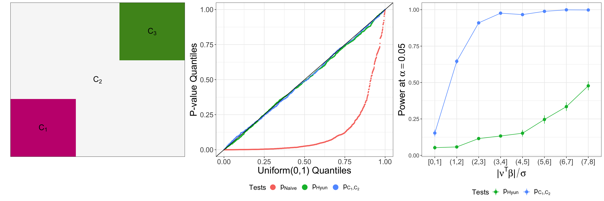

PGInference is an R package for performing Powerful Graph fused lasso Inference.
To download the PGInference package, use the code below.
require("devtools")
devtools::install_github("yiqunchen/PGInference")
library(PGInference)One of the most fundamental task in statistics is to test for a difference the means between two groups — comparing vaccine efficacy between treatment and control groups, detecting the shift in copy numbers in chromosomes, to name a few. Classical hypothesis tests (e.g., z-test when the group variance is known) control the selective Type I error (i.e., the probability of a false rejection, given that the null hypothesis is tested) when the groups are defined a priori. However, in practice, we often find ourselves testing hypotheses generated by the same data, which leads to (extremely) inflated Type I error.
As a concrete example, the graph fused lasso estimator is widely used in practice to reconstruct underlying signals that are piecewise constant. The resulting estimate can be segmented into a partition known as the connected components, regions within which the estimate takes on the same value. Suppose we want to test whether the means between two groups are the same, then we need to carefully craft new procedures in lieu of a z-test, because now the groups are defined through data.
To tackle this problem, Hyun et al. (2018) proposed the p-value pHyun by conditioning on all the intermediate outputs of the algorithm used to obtain the graph fused lasso estimator. While their proposal is computationally efficient, we note that pHyun conditions on too much information than what is necessary to come up with the hypothesis under consideration, therefore leading to (extremely) low power.
Building on the low power observation, we propose an alternative p-value pC1, C2 which conditions only on the presence of two connected components being tested. The resulting p-value will control the selective Type I error, while having higher power than pHyun. We demonstrate the increase in power in the figure below: in the leftmost panel, we plot the piecewise mean structure of the signal we are simulating from; in the middle panel, we see that under the null hypothesis, both pHyun and pC1, C2 control the selective Type I error, but the z-test pNaive = ℙ(|ν⊤Y| ≥ |ν⊤y|) leads to inflated selective Type I error; finally, we demonstrate that pC1, C2 has higher power than pHyun across all values of the effect size (|ν⊤β|/σ) considered.

If you use PGInference for your analysis, please cite our manuscript:
Chen YT, Jewell SW, Witten DM. (2021+) More powerful selective inference for the graph fused lasso.
If you encounter a bug or would like to make a change request, please file it as an issue here.
Chen YT, Jewell SW, Witten DM. (2021+) More powerful selective inference for the graph fused lasso
Fithian W, Sun D, Taylor J. (2014) Optimal Inference After Model Selection. arXiv:1410.2597 [mathST].
Hyun S, G’Sell M, Tibshirani RJ. (2018) Exact post-selection inference for the generalized lasso path. Electron J Stat.
Lee JD, Sun DL, Sun Y, Taylor JE. Exact post-selection inference, with application to the lasso. Ann Stat. 2016;44(3):907-927. doi:10.1214/15-AOS1371